Gladiator
Miecz dwuręczny. DPS pierwszej linii; wysokie HP pozwala też na chwilę zastąpić tanka. Broń: Greatsword. Rola: DPS wręcz.
Skille i pasywki: opracowanie autora (Global, 31.10.2026). Stygmy: Aion 2 Companion i, gdzie jest, ściąga.
Skille aktywne
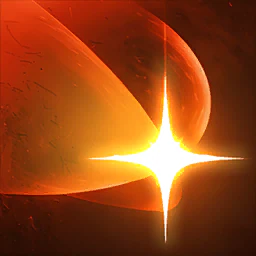
Rending Blow
16
Zadaje 2 × 538 (+74,25% Attack) obrażeń do 4 wrogom w 4 m i zwiększa Enmity. Otwiera łańcuch [Smashing Blow] na 3 s.
Vault, aion2data, Grobs: 16. Sen (DaevaOS): 20; aion2data — część graczy 20 z obiema opcjami MP. Top 493: średnio 18,4.
Specjalizacje
- lvl 8−20% zużycia MP -20% MP consumed — aLuckyRO (zamiennie z mobilnością)
- lvl 8+200 Block podczas użycia +200 Block while using skill
- lvl 8użycie w ruchuzalecane Changes to mobile skill — wszyscy
- lvl 12do +12% obrażeń przy mniejszej liczbie celówzalecane Deals up to 12% more damage when less targets are hit — Grobs
- lvl 16+50 MP za trafienie krytycznezalecane Restores 50 MP on landing a Critical Hit — Grobs, Vault (drugi slot na 16), xMontu, Sen
Wybór: Mobilność + (do 15) +12% obrażeń; od 16 drugi slot: +50 MP za krytyk. aLuckyRO zamienia mobilność na −20% MP zależnie od treści.
karta skilla na aion2.gg · Opracowanie autora na danych klienta Global (aion2data, wartości przy poziomie 10 skilla, stan 31.10.2026).
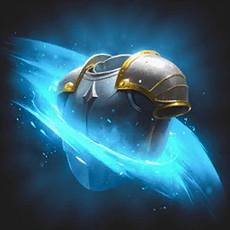
Keen Strike
12
Zadaje 322 (+43% Attack) obrażeń do 4 wrogom w 4 m, zwiększa Enmity i przywraca 100 MP. Otwiera łańcuch [Rupture Strike] na 3 s.
Vault i aLuckyRO: 12; aion2.gg: na liście „max first”; top 493: średnio 14. Grobs przestaje go używać po Overhead Slam 16; aion2data — spór, czy warto go przeplatać na Slam 16–20.
Specjalizacje
- lvl 8+20% odnowienia MP (+120 MP)zalecane +20% MP restored — Grobs, Vault
- lvl 8pochłania 1% HP Absorbs 1% HP — Ashura Whole Heavens
- lvl 8+50% Multi-Hitzalecane +50% Multi-Hit on hit — Grobs, Vault, xMontu
- lvl 12−1 s CD Ruinous Blow za trafienie -1s [Ruinous Blow] cooldown on hit — aLuckyRO, Ulfhednar, xMontu
- lvl 16łańcuch [Reckless Strike] Adds [Reckless Strike] Chain Skill — xMontu
Wybór: Do 11: +20% MP lub +50% Multi-Hit. Od 12: Grobs bierze obie; aLuckyRO/Ulfhednar — jedną z nich + −1 s CD Ruinous Blow.
karta skilla na aion2.gg · Opracowanie autora na danych klienta Global (aion2data, wartości przy poziomie 10 skilla, stan 31.10.2026).
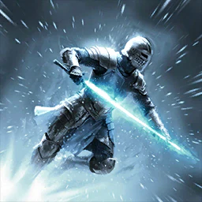
Leaping Slam
8
Skacze do celu w 20 m i zadaje 2 × 795 (+115% Attack) obrażeń. 10 Stagger Gauge Damage.
Vault: 8 (levelowanie i lvl 45). Top 493: średnio 14,2 (z bonusów gearu/Daevanion).
Specjalizacje
- lvl 8Prepare for Battle na casterze na 3 s Prepare for Battle effect on the caster for 3s — aion2data (krótki buff po skoku)
- lvl 850% szansy na aktywację Ankle Slice 50% chance to trigger [Ankle Slice] on hit
- lvl 8reset CD po pokonaniu wrogazalecane Resets cooldown on defeating an enemy — Grobs, Vault, Ulfhednar (farmienie)
- lvl 12+20% PvE Damage Tolerance na 3 s +20% PvE Damage Tolerance and +10 PvP Damage Tolerance for 3s — Ashura Whole Heavens
- lvl 16AoE + przyciąganie wrogów Changes to AoE skill and pulls in enemies
Wybór: Reset CD po zabiciu (farmienie i dungeony).
karta skilla na aion2.gg · Opracowanie autora na danych klienta Global (aion2data, wartości przy poziomie 10 skilla, stan 31.10.2026).
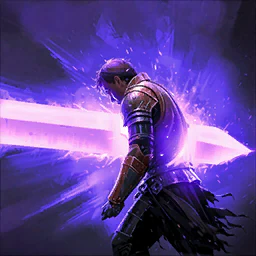
Mocking Blade
brak danych
Zadaje 3 × 1 504 (+194,4% Attack) obrażeń celowi w 4 m i nakłada Knockdown na 3 s. Na celach z Incapacitated Immunity zmienia animację. 15 Stagger Gauge Damage.
aion2.gg: używaj na CD — jego Knockdown umożliwia Overhead Slam na zwykłych mobach podczas levelowania. xMontu: niski priorytet później.
Specjalizacje
- lvl 8pochłania 4% HP (15% z celu z Incapacitated Immunity) Absorbs 4% HP, absorbs 15% HP of target with Incapacitated Immunity — Ashura Whole Heavens
- lvl 8AoE przy uderzeniu w dół Changes to AoE damage on down strike
- lvl 8+2 dodatkowe uderzenia Adds 2 additional strikes
- lvl 12+1 s Knockdown +1s Knockdown duration
- lvl 16ignoruje Block i Evasion, trafia jako Multi-Hit Ignores Block and Evasion and lands as Multi-Hit
Wybór: brak zalecenia w poradnikach
karta skilla na aion2.gg · Opracowanie autora na danych klienta Global (aion2data, wartości przy poziomie 10 skilla, stan 31.10.2026).
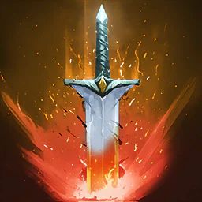
Overhead Slam
16 → 20
Zadaje 2 × 1 266 (+163,6% Attack) obrażeń celowi z Knockdown w 4 m i zwiększa Enmity. 7% szansy na aktywację przy ataku na cel z Incapacitated Immunity (bossy). 5 Stagger Gauge Damage.
Pierwszy skill do podbicia — zgodnie wszystkie źródła (Vault, aion2data, Grobs, aion2.gg „max first”). aion2data: 20 to kolejny skok (trzeci slot); top 493 graczy ma średnio 20,3.
Specjalizacje
- lvl 8pochłania 0,7% HP Absorbs 0.7% HP — aion2data: „leczenie nie jest potrzebne”
- lvl 8zmiana na skill obszarowy (AoE) Changes to AoE Skill
- lvl 8łańcuch [Upward Strike]zalecane Adds [Upward Strike] Chain Skill — Grobs (do 15), aion2.gg (pierwszy wybór), xMontu; aion2data: większość na 16
- lvl 12zawsze krytyk przy trafieniuzalecane Critical Hit on hit — Grobs, Vault, xMontu; Ashura Whole Heavens w PvE zamienia na 7%-ową aktywację
- lvl 16usunięcie cooldownuzalecane Remove cooldown — wszyscy
Wybór: Do 15: Upward Strike + krytyk. Na 16 brak CD + jedna z nich: Grobs/Vault — krytyk (odrzuca Upward Strike), aion2data — większość gra Upward Strike. Na 20: wszystkie trzy.
karta skilla na aion2.gg · Opracowanie autora na danych klienta Global (aion2data, wartości przy poziomie 10 skilla, stan 31.10.2026).
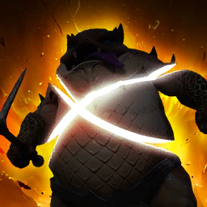
Sword Aura Rampage
8–16
Zadaje 4 × 718 (+82,5% Attack) obrażeń celowi pod Staggerem w 4 m.
Vault: 8 przy levelowaniu, 16 sytuacyjnie na lvl 45; aion2data: gracze z Korei — 16; Grobs: po Rending Blow/Overhead Slam. Top 493: średnio 11,1.
Specjalizacje
- lvl 8pochłania 5% HPzalecane Absorbs 5% HP — Grobs
- lvl 8przywraca 120 MP Restores 120 MP — aion2data („naprawa many”, 3 za, 1 przeciw)
- lvl 8użycie w ruchu Changes to mobile skill
- lvl 12Multi-Hit przy trafieniu Multi-Hit on hit
- lvl 16−1 s CD wszystkich skilli za trafieniezalecane -1s all skill cooldowns on hit — Grobs, Vault (Ulfhednar) — na 16
Wybór: Pochłanianie 5% HP (lub +120 MP przy problemach z maną); na 16 −1 s CD wszystkich skilli.
karta skilla na aion2.gg · Opracowanie autora na danych klienta Global (aion2data, wartości przy poziomie 10 skilla, stan 31.10.2026).
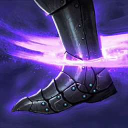
Ankle Slice
brak danych
Zadaje 2 × 1 431 (+150% Attack) obrażeń; po bloku 50% szansy na Root 3 s (100% na NPC). Dostępny po parowaniu lub Leaping Slam.
aion2.gg: używaj po każdym parowaniu (mocniejszy od Rending Blow). xMontu: niski priorytet w PvE.
Specjalizacje
- lvl 830% szansy na Knockdown 3 s 30% chance to inflict Knockdown for 3s on landing [Ankle Slice] — Sen — PvP
- lvl 8łańcuch [Ankle Smash] Adds [Ankle Smash] Chain Skill
- lvl 8+16 m zasięgu +16m [Ankle Slice] range — Sen — PvP
- lvl 12ignoruje Block i Evasion, trafia jako Multi-Hit Ignores Block and Evasion and lands as Multi-Hit
- lvl 1625% szansy na reset CD przy bloku 25% chance to reset [Ankle Slice] cooldown on Block
Wybór: brak zalecenia w poradnikach
karta skilla na aion2.gg · Opracowanie autora na danych klienta Global (aion2data, wartości przy poziomie 10 skilla, stan 31.10.2026).
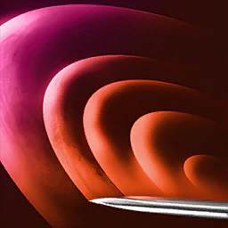
Crushing Wave
10 (solo)
Zadaje 2 × 1 001 (+105% Attack) obrażeń do 4 wrogom w 5 m od castera. Otwiera łańcuch [Frenzied Wave] na 3 s.
Tylko aion2.gg: przy grze solo zastępuje Keen Strike na liście „max first”; używaj na CD. Vault: 50% buildów na pasku; brak zalecenia poziomu w innych poradnikach.
Specjalizacje
- lvl 8pochłania 2% HP Absorbs 2% HP — Ashura Whole Heavens, Sen
- lvl 8+50 MP za trafienie krytyczne Restores 50 MP on landing a Critical Hit
- lvl 8do +20% obrażeń przy większej liczbie celów Up to +20% damage when more targets hit
- lvl 12reset CD przy krytyku Resets cooldown on landing a Critical Hit — Ashura Whole Heavens, Sen
- lvl 1650% szansy na przyciągnięcie 50% chance to pull
Wybór: brak zalecenia w poradnikach
karta skilla na aion2.gg · Opracowanie autora na danych klienta Global (aion2data, wartości przy poziomie 10 skilla, stan 31.10.2026).
Rush Strike
8
Po [Dodge] lub w locie doskakuje do celu w 10 m i zadaje 2 × 1 267 (+125% Attack) obrażeń; 30% szansy na Knockdown 3 s (100% na NPC). 10 Stagger Gauge Damage.
Vault: 8 (91% buildów ma go na pasku).
Specjalizacje
- lvl 8przywraca 300 Stamina przy trafieniu Restores 300 Stamina on hit — Ashura Whole Heavens
- lvl 8+10 m zasięguzalecane +10m range — Grobs (oba doskoki na 20 m)
- lvl 8zmiana na Charge Skill z AoE Changes to Charge Skill and deals AoE damage
- lvl 12−10 s cooldownu -10s cooldown
- lvl 16+25% szansy na Knockdown +25% Knockdown Chance
Wybór: +10 m zasięgu.
karta skilla na aion2.gg · Opracowanie autora na danych klienta Global (aion2data, wartości przy poziomie 10 skilla, stan 31.10.2026).
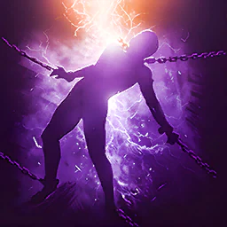
Aerial Snare
brak danych
Zadaje 1 840 (+181,5% Attack) obrażeń celowi z Knockdown w 4 m; 50% szansy na Airborne 3 s (100% na NPC). 5% szansy na aktywację przy ataku na cel z Incapacitated Immunity. 20 Stagger Gauge Damage.
xMontu: prawie nieużywany. Ashura: przydatny na bossach (szansa aktywacji). aion2data: Korea w Nightmare zamiast Defiance.
Specjalizacje
- lvl 8Multi-Hit przy trafieniu Multi-Hit on hit
- lvl 8+25% szansy na Airborne +25% [Aerial Snare] Airborne Chance
- lvl 8+100% obrażeń celom z Incapacitated Immunity +100% damage to targets with Incapacitated Immunity — aion2data (Nightmare, KR)
- lvl 12łańcuch [Forced Fall] Adds [Forced Fall] Chain Skill
- lvl 16−50% cooldownu -50% [Aerial Snare] cooldown — aion2data (Nightmare, KR)
Wybór: brak zalecenia w poradnikach
karta skilla na aion2.gg · Opracowanie autora na danych klienta Global (aion2data, wartości przy poziomie 10 skilla, stan 31.10.2026).
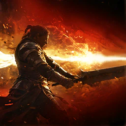
Ruinous Blow
10–16
Doskakuje do celu w 7,5 m i zadaje 7 296 (+689% Attack) obrażeń do 4 wrogom; Prepare for Battle na 20 s: +20% PvE Damage Boost, +10% PvP Damage Boost, +100 Critical Hit, +15% Status Effect Chance. 25 Stagger Gauge Damage.
Vault: 16, ale niższy priorytet; aion2data (build meta): 10; Grobs („Overhead Level 16”): 16; Ashura: poziom 16 słaby, dopiero 20. Top 493: średnio 17.
Specjalizacje
- lvl 8+20% Skill Speed +20% Skill Speed — Grobs (levelowanie), xMontu
- lvl 8+12,5 m zasięgu +12.5m Range
- lvl 8+30% Skill Critical Hitzalecane +30% Skill Critical Hit — Grobs (lvl 45)
- lvl 12dodatkowe obrażenia przy trafieniuzalecane Extra damage on hit — Grobs, Vault
- lvl 16ignoruje Block i Evasion, trafia jako Multi-Hit Ignores Block and Evasion and lands as Multi-Hit — xMontu
Wybór: Lvl 12: dodatkowe obrażenia + na lvl 45 +30% Skill Critical Hit (Grobs); podczas levelowania +20% Skill Speed.
karta skilla na aion2.gg · Opracowanie autora na danych klienta Global (aion2data, wartości przy poziomie 10 skilla, stan 31.10.2026).

Defiance
8–12
Usuwa Stun, Knockdown, Airborne, Grab, Frost i Fear; Tenacity (odporność) na 5 s. Niezależny od redukcji CD.
Vault: 8 przy levelowaniu, 12 na lvl 45. Tylko 23% buildów ma go na pasku.
Specjalizacje
- lvl 8łańcuch [Wrath Burst] Adds [Wrath Burst] Chain Skill
- lvl 8przywraca 1 000 Stamina Restores 1,000 Stamina on using [Defiance]
- lvl 8przywraca 20% HPzalecane Restores 20% HP on using [Defiance] — Grobs, Vault
- lvl 12+2 s Tenacity +2s Tenacity duration
- lvl 16+50% PvE Damage Tolerance podczas Tenacity +50% PvE Damage Tolerance and +25% PvP Damage Tolerance for Tenacity duration — Ashura Whole Heavens
Wybór: 20% HP.
karta skilla na aion2.gg · Opracowanie autora na danych klienta Global (aion2data, wartości przy poziomie 10 skilla, stan 31.10.2026).
Pasywki
Survival Stance
brak danych
+2 000 HP, +25% Max HP, +200 regeneracji HP, +10% PvE Damage Tolerance.
Tylko Ashura (build wytrzymały).
Pasywka nie ma specjalizacji.
karta skilla na aion2.gg · Opracowanie autora na danych klienta Global (aion2data, wartości przy poziomie 10 skilla, stan 31.10.2026).
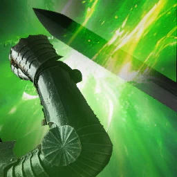
Protection Armor
brak danych
+200 Block; przy bloku przywraca 351–421 HP.
Tylko Ashura (build wytrzymały).
Pasywka nie ma specjalizacji.
karta skilla na aion2.gg · Opracowanie autora na danych klienta Global (aion2data, wartości przy poziomie 10 skilla, stan 31.10.2026).
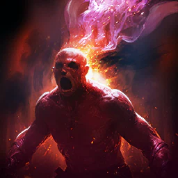
Blood Absorption
opcja
50% szansy na przywrócenie 112–134 HP i 2,5% Max HP przy trafieniu; przy HP ≤ 50% natychmiast 35% Max HP (CD 60 s).
Vault: opcjonalnie (sustain); lubią go Grobs i Sen.
Pasywka nie ma specjalizacji.
karta skilla na aion2.gg · Opracowanie autora na danych klienta Global (aion2data, wartości przy poziomie 10 skilla, stan 31.10.2026).
Identify Weakness
opcja
+190 Critical Hit i +5% Perfect Chance.
aion2.gg liczy go do pięciu pasywek obrażeń (węzły Daevanion); Ashura — build wytrzymały. Lunge Stance lvl 15 wzmacnia go ×1,5.
Pasywka nie ma specjalizacji.
karta skilla na aion2.gg · Opracowanie autora na danych klienta Global (aion2data, wartości przy poziomie 10 skilla, stan 31.10.2026).
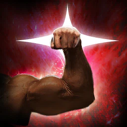
Attack Preparation
10 (max)
+10% PvE Damage Boost, +5% PvP Damage Boost, +20% Defense, +100 Accuracy.
Druga pasywka — wszystkie źródła.
Pasywka nie ma specjalizacji.
karta skilla na aion2.gg · Opracowanie autora na danych klienta Global (aion2data, wartości przy poziomie 10 skilla, stan 31.10.2026).
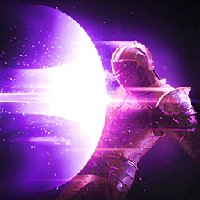
Impact Hit
lvl 45
+22% Impact-type Chance i +3% Double Chance.
Vault/Grobs, xMontu: dobierz na lvl 45. Sprzeczność: aLuckyRO i Ashura — raczej PvP.
Pasywka nie ma specjalizacji.
karta skilla na aion2.gg · Opracowanie autora na danych klienta Global (aion2data, wartości przy poziomie 10 skilla, stan 31.10.2026).
Destructive Impulse
brak danych
Dodatkowe 369 (+33% Attack) obrażeń celom pod Staggerem lub efektem typu Impact.
Wymienia go tylko Sen (DaevaOS); brak w buildach Vault/aion2data.
Pasywka nie ma specjalizacji.
karta skilla na aion2.gg · Opracowanie autora na danych klienta Global (aion2data, wartości przy poziomie 10 skilla, stan 31.10.2026).
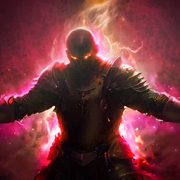
Experienced Counterstrike
10 (max)
+4% Front Attack Damage Boost; po bloku +9% PvE Damage Boost (4,5% PvP) na 20 s dla castera i drużyny. Nie łączy się z Fury Templara.
Pierwsza pasywka — aion2.gg; top u Vault, Grobsa, xMontu i aLuckyRO.
Pasywka nie ma specjalizacji.
karta skilla na aion2.gg · Opracowanie autora na danych klienta Global (aion2data, wartości przy poziomie 10 skilla, stan 31.10.2026).
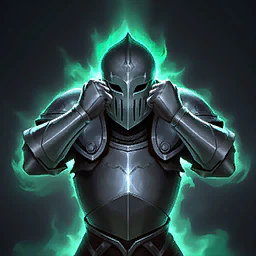
Survival Willpower
brak danych
+35% Status Effect Resist; przy Stun/Knockdown/Airborne/Frost/Fear +30% PvE Damage Tolerance na 5 s (CD 60 s).
Brak zalecenia PvE.
Pasywka nie ma specjalizacji.
karta skilla na aion2.gg · Opracowanie autora na danych klienta Global (aion2data, wartości przy poziomie 10 skilla, stan 31.10.2026).
Murderous Burst
lvl 45
Stack Menace przy trafieniu; przy 5 stackach 1 013 (+78% Attack) obrażeń do 4 wrogom w 5 m i +10% Critical Damage Boost na 3 s.
Vault/Grobs, xMontu: dobierz na lvl 45. Ashura: dobre na paczki mobów, słabsze na bossach.
Pasywka nie ma specjalizacji.
karta skilla na aion2.gg · Opracowanie autora na danych klienta Global (aion2data, wartości przy poziomie 10 skilla, stan 31.10.2026).
Stygmy
Blade Toss
zamiennik
534 obrażeń od 20 m; cel loses 30% Defense i 50% Incoming Heal na 10 s; otwiera łańcuch Blade Dance
Poziom 10: 1 087. Poziom 20: 1 495.
23% buildów. Ulfhednar bierze go zamiast Focused Block: −30% Defense i −50% Incoming Heal.
Perki stygmy
- poziom 5+20% leczenie reduction
- poziom 105 s Slow
- poziom 15Przebija Protective Shields
- poziom 20Blade Dance gets 30% szansy na 3 s Knockdown
karta skilla na aion2.gg · Aion 2 Companion (aion2.grimvane.app), wartości Global przy podanym poziomie skilla.
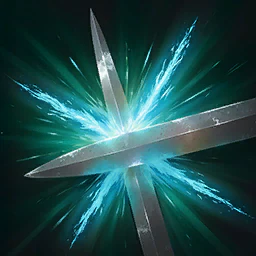
Focused Block
5
+100% Block obrażeń Reduction i gwarantowany Parry; 110 MP i Stamina once na Parry
Poziom 10: 200 MP. Poziom 20: 300.
Build PvE: poziom 5, drugie użycie z rzędu. Parowanie odpala Experienced Counterstrike dla drużyny. Vault 59%, top 78%.
Perki stygmy
- poziom 5+1 use w row
- poziom 10Można używać w ruchu
- poziom 15+20% Move Speed na 3 s na Parry
- poziom 2010% HP once na Parry
karta skilla na aion2.gg · Aion 2 Companion (aion2.grimvane.app), wartości Global przy podanym poziomie skilla.

Armor of Balance
brak danych
+50% Impact-type Resist na 10 s
Poziom 10: 14,5 s. Poziom 20: 20 s.
Perki stygmy
- poziom 5+20% Ailment-type i Mental-type Resist
- poziom 10Blood Absorption x1,5 przez czas działania
- poziom 15Protection Armor x1,5 przez czas działania
- poziom 20+50% więcej Impact-type Resist
karta skilla na aion2.gg · Aion 2 Companion (aion2.grimvane.app), wartości Global przy podanym poziomie skilla.
Wrath Wave
brak danych
1 068 obrażeń do 4 wrogów w 5 m, 3 s Knockdown (50% na players, 100% na NPCs), 50 stagger
Poziom 10: 2 174. Poziom 20: 2 990.
Perki stygmy
- poziom 5Do +20% obrażeń z więcej celów
- poziom 10Wróg Attack -20% na 5 s
- poziom 15Trafia one więcej time
- poziom 20+25% Knockdown chance
karta skilla na aion2.gg · Aion 2 Companion (aion2.grimvane.app), wartości Global przy podanym poziomie skilla.
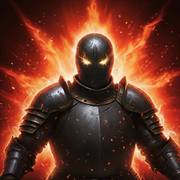
Zikel's Blessing
10
+20% Attack i +100 Accuracy na 10 s, na ciebie
Poziom 10: 14,5 s. Poziom 20: 20 s.
Build PvE: zwykle 10 (+10% PvE Damage Boost). Vault 95%, top 97%. Na Global buff jest tylko na ciebie.
Perki stygmy
- poziom 5+50% Stagger Gauge Damage
- poziom 10+10% PvE i +5% PvP Damage Boost
- poziom 15+50% Multi-Hit chance
- poziom 20+20% Status Effect Chance
karta skilla na aion2.gg · Aion 2 Companion (aion2.grimvane.app), wartości Global przy podanym poziomie skilla.
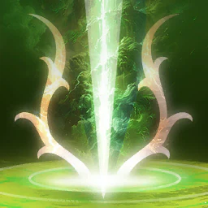
Lifestealing Blade
zamiennik
1 522 obrażeń do 4 wrogów w 4 m, pochłania 10% HP, 20 stagger
Poziom 10: 3 097. Poziom 20: 4 260.
36% buildów Vault — sustain albo build grupowy (aion2.gg, Sen).
Perki stygmy
- poziom 5Do +20% obrażeń z więcej celów
- poziom 10Predation na drużyna na 20 s
- poziom 15−30 s CD
- poziom 20+5% HP absorbed
karta skilla na aion2.gg · Aion 2 Companion (aion2.grimvane.app), wartości Global przy podanym poziomie skilla.
Tenaciousness
brak danych
Immune do obrażeń i status effects na 3 s, potem +50% PvE i +25% PvP Damage Tolerance na 3 s
Na wyższym poziomie: Same
Perki stygmy
- poziom 5+100% Incoming Heal
- poziom 1020% max HP gdy it ends
- poziom 15+20% Attack
- poziom 20Fires o itself gdy Impact-type status lands
karta skilla na aion2.gg · Aion 2 Companion (aion2.grimvane.app), wartości Global przy podanym poziomie skilla.
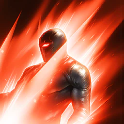
Rage Burst
5
1 327 obrażeń jeden cel; Wounded (jego Attack -10%) na 10 s; zyskujesz +10% PvE i +5% PvP Damage Boost na 10 s; otwiera Overhead Slam na celu na 10 s; 20 stagger
Poziom 10: 2 701 obrażeń. Poziom 20: 3 714.
Build PvE autora: wystarczy 5 (−15 s CD). Otwiera 10 s okno na Overhead Slam. Aion2Vault 96%, wśród 493 najsilniejszych z aion2data 98%.
Perki stygmy
- poziom 5−15 s CD
- poziom 10+10% obniżenie Attack
- poziom 15Zawsze krytyk
- poziom 20+10% PvE i +5% PvP Damage Boost więcej
karta skilla na aion2.gg · Aion 2 Companion (aion2.grimvane.app), wartości Global przy podanym poziomie skilla.
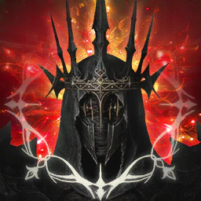
Lunge Stance
20
+20% Combat Speed na 10 s
Poziom 10: 14,5 s. Poziom 20: 20 s.
Build PvE: wbij na 20, 50% szansy na −1 s CD wszystkich skilli przy krytyku. Vault 96%, top 99%.
Perki stygmy
- poziom 5+5% Double Chance przez czas działania
- poziom 10+20% Move Speed przez czas działania
- poziom 15Identify Weakness x1,5 przez czas działania
- poziom 2050% chance na każdy crit do cut all cooldowns o 1 s przez czas działania
karta skilla na aion2.gg · Aion 2 Companion (aion2.grimvane.app), wartości Global przy podanym poziomie skilla.
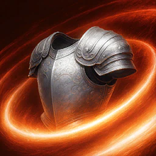
Wave Armor
brak danych
207 obrażeń over Time do do 4 wrogów w 3 m na 10 s
Poziom 10: 421 na 14,5 s. Poziom 20: 579 na 20 s.
Perki stygmy
- poziom 5Pochłania 2% HP
- poziom 10Experienced Counterstrike x1,5 przez czas działania
- poziom 15Murderous Burst x1,5 przez czas działania
- poziom 20Reflects 10% of obrażeń taken
karta skilla na aion2.gg · Aion 2 Companion (aion2.grimvane.app), wartości Global przy podanym poziomie skilla.
Forced Restraint
brak danych
1 059 obrażeń jeden cel i 5 s Seal (75% na players, 100% na NPCs), 20 stagger
Poziom 10: 2 155. Poziom 20: 2 964.
Perki stygmy
- poziom 550% szansy na 5 s Root
- poziom 10-1 000 Stamina
- poziom 15+2 s Seal
- poziom 20+25% Seal chance
karta skilla na aion2.gg · Aion 2 Companion (aion2.grimvane.app), wartości Global przy podanym poziomie skilla.
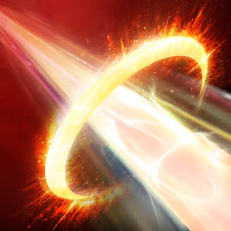
Fracturing Rush
brak danych
Doskakuje 10 m for 974 obrażeń do 4 wrogów na path i 3 s Root (60% na players, 100% na NPCs), 20 stagger
Poziom 10: 1 982. Poziom 20: 2 726.
Perki stygmy
- poziom 5+2 cele
- poziom 10Dodaje Destructive doskok
- poziom 15+20% Root chance
- poziom 2050% szansy na 3 s Airborne
karta skilla na aion2.gg · Aion 2 Companion (aion2.grimvane.app), wartości Global przy podanym poziomie skilla.

Assault Strike
brak danych
998 obrażeń do 4 wrogów wokół cel w 20 m i 3 s Knockdown (30% na players, 100% na NPCs); do +20% Defense o cele hit
Poziom 10: 2 031. Poziom 20: 2 794.
Perki stygmy
- poziom 5+20% Attack na 5 s przy trafieniu
- poziom 10500 MP obrażeń
- poziom 15+10 m range
- poziom 20+20% Knockdown chance
karta skilla na aion2.gg · Aion 2 Companion (aion2.grimvane.app), wartości Global przy podanym poziomie skilla.
Build PvE
Skrót z buildu PvE autora (Global, lvl 45, stan 31.10.2026). Wartości skilli aktywnych w kartach powyżej są przy poziomie 10, o ile karta nie mówi inaczej.
- Kolejność skilli: Overhead Slam 16, potem 20 → Rending Blow 16 → Ruinous Blow (buff i burst) → Keen Strike 12 pod MP.
- Stygmy, kolejność aion2data: po Overhead Slam 16 weź Lunge Stance 20, potem Rending Blow 16, Zikel's Blessing 10, Rage Burst 5, Focused Block 5.
- Popularność stygm (Aion2Vault, 557 buildów, 26.10.2026; obok udział u 493 najsilniejszych z aion2data): Rage Burst 96% (u topu 98%, wystarczy 5), Lunge Stance 96% (top 99%, cel 20), Zikel's Blessing 95% (top 97%, zwykle 10), Focused Block 59% (top 78%, poziom 5).
- Pasywki: Experienced Counterstrike i Attack Preparation na start. Na 45 Impact Hit i Murderous Burst. Blood Absorption opcjonalnie pod sustain. aLuckyRO uważa Impact Hit za pasywkę PvP.
- Zamiany: Lifestealing Blade (36% buildów) pod sustain; Blade Toss (23%, Ulfhednar) zamiast Focused Block.
Makro jest wbudowane w grę. Nie używaj makr z zewnętrznych programów — w zgłoszeniach graczy jest osobny powód „Macro”.
Źródła
- Aion 2 Companion — skille, pasywki, stygmy
- aion2.gg — lista skilli klasy
- aion2.gg — build PvE
- aion2data.com — dane klienta Global
- aion2data.com — Gladiator: wszystkie skille (dane klienta Global 2026.10.28)
- aion2data.com — Gladiator PvE (meta, „Skills to level first”, top 493 graczy)
- Aion2Vault — Gladiator PvE (Grobs, Ulfhednar: poziomy, specjalizacje, pasywki)
- Aion2Vault — statystyki buildów
- DaevaOS — poradnik Gladiatora (Grobs, xMontu, aLuckyRO, Sen, Ashura Whole Heavens)
- Aion2.gg — Gladiator PvE
Data tej strony: 11 listopada 2026. Edycja Global (Steam, EU). Nazwy skilli są po angielsku, tak jak w kliencie.